Unicode Standard Annex #34
Unicode Named Character Sequences
| Version | Unicode 6.0.0 |
| Editors | Ken Whistler (ken@unicode.org) |
| Date | 2010-10-08 |
| This Version | http://www.unicode.org/reports/tr34/tr34-11.html |
| Previous Version | http://www.unicode.org/reports/tr34/tr34-9.html |
| Latest Version | http://www.unicode.org/reports/tr34/ |
| Latest Proposed Update | http://www.unicode.org/reports/tr34/proposed.html |
| Revision | 11 |
Summary
This annex defines the concept of Unicode named character sequences, specifies a notational convention for them and a set of rules constraining possible names applied to character sequences.
Status
This document has been reviewed by Unicode members and other interested parties, and has been approved for publication by the Unicode Consortium. This is a stable document and may be used as reference material or cited as a normative reference by other specifications.
A Unicode Standard Annex (UAX) forms an integral part of the Unicode Standard, but is published online as a separate document. The Unicode Standard may require conformance to normative content in a Unicode Standard Annex, if so specified in the Conformance chapter of that version of the Unicode Standard. The version number of a UAX document corresponds to the version of the Unicode Standard of which it forms a part.
Please submit corrigenda and other comments with the online reporting form [Feedback]. Related information that is useful in understanding this annex is found in Unicode Standard Annex #41, “Common References for Unicode Standard Annexes.” For the latest version of the Unicode Standard, see [Unicode]. For a list of current Unicode Technical Reports, see [Reports]. For more information about versions of the Unicode Standard, see [Versions]. For any errata which may apply to this annex, see [Errata].
Contents
- 1 Overview
- 2 Definitions and Notation
- 3 Conformance
- 4 Names
- 5 Data Files
- Acknowledgments
- References
- Modifications
1 Overview
The Unicode Standard specifies notational conventions for referring to sequences of characters (or code points) treated as a unit, using angle brackets surrounding a comma-delimited list of code points, code points plus character names, and so on. For example, both of the designations in Table 1 refer to a combining character sequence consisting of the letter “a” with a circumflex and an acute accent applied to it.
Table 1. Example of a Combining Character Sequence
| <U+0061, U+0302, U+0301> |
| <U+0061 LATIN SMALL LETTER A, U+0302 COMBINING CIRCUMFLEX ACCENT, U+0301 COMBINING ACUTE ACCENT> |
See Appendix A, Notational Conventions, in [Unicode] for the description of the conventions for expression of code points and for the representation of sequences of code points.
The Unicode conventions for referring to a sequence of characters (or code points) are a generalization of the formal syntax specified in ISO/IEC 10646:2003 for UCS Sequence Identifiers, or USI. A USI has the form
<UID1, UID2, ... UIDn>
where the UIDi represent the short identifiers for code points—most commonly “U+0061” or “0061”. A USI must contain at least two code points.
Such a generalized notation for sequences of Unicode code points is often useful in discursive text. More formally, other standards may need to refer to entities that are represented in Unicode by sequences of characters. Mapping tables may map single characters in other standards to sequences of Unicode characters, and listings of repertoire coverage for fonts or keyboards may need to reference entities that do not correspond to single Unicode code points.
1.1 Named Character Sequences
In some limited circumstances it is necessary to also provide a name for such sequences. The primary example is the need to have an identifier for a sequence to correlate with an identifier in another standard, for which a cross-mapping to Unicode is desired. To address this need, the Unicode Standard defines a mechanism for naming sequences and provides a short list of sequences that have been formally named. This list is deliberately selective: it is neither possible nor desirable to attempt to provide names for all possible sequences of Unicode characters that could be of interest.
This annex defines the concept of a Unicode named character sequence, specifies a notational convention for such sequences, and a set of rules constraining possible names applied to character sequences. Section 5, Data Files, identifies the data file containing the normative list of Unicode named character sequences. As is the case for character names, named character sequences are strictly synchronized with ISO/IEC 10646.
Table 2 provides some examples of Unicode named character sequences to illustrate the kinds of entities that have been formally named. The “Sequence” column illustrates the entity in question with a representative rendering above the sequence of encoded Unicode characters that represent that entity. The “Name” column shows the name that has been associated with that sequence.
Table 2. Examples of Named Character Sequences
| Sequence | Name | Notes on Usage |
|---|---|---|
|
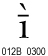
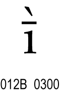 |
LATIN SMALL LETTER I WITH MACRON AND GRAVE | Livonian |
|
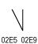
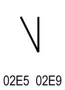 |
MODIFIER LETTER EXTRA-HIGH EXTRA-LOW CONTOUR TONE BAR | Contour tone letter |
|
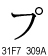
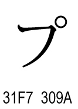 |
KATAKANA LETTER AINU P | Ainu in kana transcription |

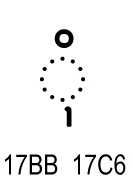 |
KHMER VOWEL SIGN OM | Khmer |
|
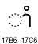
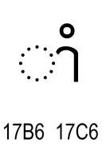 |
KHMER VOWEL SIGN AAM | Khmer |
|
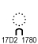
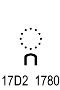 |
KHMER CONSONANT SIGN COENG KA | Khmer |
1.2 Relation to Variation Sequences
Unicode named character sequences differ from Unicode variation sequences. The latter are documented in Section 16.4, Variation Selectors, in [Unicode] and are listed exhaustively in the data file StandardizedVariants.txt in the Unicode Character Database [UCD].
Variation sequences always consist of a sequence of precisely defined code points, the second of which must be a variation selector. There are additional constraints on which types of characters they can start with. Variation sequences have a restricted range of glyphic shapes, but have no associated name.
Named character sequences can, in principle, consist of code point sequences of any length, without constraints on what types of characters are involved. They do not have a specifically defined glyphic shape, but they do have a formally specified name associated with them.
2 Definitions and Notation
SD1 Unicode named character sequence: A specific sequence of two or more Unicode characters, together with a formal name designating that sequence.The notation for a Unicode named character sequence consists of the general conventions for character sequences in Appendix A, Notational Conventions, of [Unicode], together with name conventions as specified in Section 4, Names. Thus a typical representation of a Unicode named character sequence would be
<U+012B, U+0300> LATIN SMALL LETTER I WITH MACRON AND GRAVE
In contexts that supply other clear means for delimitation, such as data files or tables, the bracketing and comma delimitation conventions for the sequences may be dropped, as in
012B 0300;LATIN SMALL LETTER I WITH MACRON AND GRAVE
3 Conformance
Conformance to the Unicode Standard requires conformance to the specification in this annex. The relationship between conformance to the Unicode Standard and conformance to an individual Unicode Standard Annex (UAX) is described in more detail in Section 3.2, Conformance Requirements, in [Unicode].
UAX34-C1. If a process purports to implement Unicode named character sequences, it shall use only those named character sequences defined in the file NamedSequences.txt in the Unicode Character Database.Only the named character sequences in NamedSequences.txt are named in this standard. No other Unicode character sequences are given names in this version of the Unicode Standard, although named character sequences may be added in the future. Only sequences that are in Normalization Form NFC are given names in the Unicode Standard.
Conformance to this clause should not be construed as preventing implementers from providing informal names of their choice to any entities or character sequences, as appropriate. However, such informal names are not specified in any way by this standard for use in interchange.
The use of unnamed character sequences is not affected by the specifications in this annex.
3.1 Provisional Process for Named Character Sequences
When named character sequences are first suggested for inclusion in the Unicode Standard, they may be accepted provisionally. In such cases, they are listed in the file NamedSequencesProv.txt. See [DataProv].
Character sequences and proposed names listed in NamedSequencesProv.txt are provisional only and have no other status. They become part of the standard itself only when approved for inclusion in NamedSequences.txt.
The use of a provisional list is meant to allow sufficient time for review and comment on proposed named character sequences before they are finally approved. This also enables the normative data file, NamedSequences.txt, to remain stable.
3.2 Stability of Approved Named Character Sequences
Once a Unicode named character sequence has been approved, it is stable and will not be changed in any way in future versions of the standard. This stability applies both to the name of the named character sequence and to the sequence of code points associated with the name. See [Stability] for more information on the Unicode Consortium Stability Policies.
4 Names
Names of Unicode named character sequences are unique. They are part of the same namespace as Unicode character names. As a result, where a name exists as a character name, a modified name must be assigned instead. The same applies to not-yet-encoded characters.
Where possible, the names for sequences are constructed by appending the names of the constituent elements together while eliding duplicate elements, and possibly introducing the words between elements for clarity. Where this process would result in a name that already exists, the name is modified suitably to guarantee uniqueness. Table 3 gives some examples of names for hypothetical sequences constructed according in this manner.
Table 3. Examples of Hypothetical Sequence Names
| USI | Alternate Representation of Sequence | Name |
|---|---|---|
|
<0041, 0043, 0043> |
<A, B, C> | LATIN CAPITAL LETTER A B C |
|
<00CA, 0046> |
<AE, F> | LATIN CAPITAL LETTER AE F |
|
<0058, 030A> |
<X, COMBINING RING ABOVE> | LATIN CAPITAL LETTER X WITH RING ABOVE |
Where names are constructed other than by merging existing character names for the constituent characters of the sequence, convention restricts any additional items to the Latin capital letters A to Z, SPACE, HYPHEN-MINUS, and the digits 0 to 9, provided that a digit is not the first character in a word. This convention makes it possible to turn names into identifiers using straightforward transformations.
Names for named character sequences are constructed according to the following rules:
UAX34-R1. Only Latin capital letters A to Z, digits 0 to 9 (provided that a digit is not the first character in a word), SPACE, and HYPHEN-MINUS are used for writing the names.
UAX34-R2. Only one name is given to each named character sequence, and each named character sequence must have a unique name within the namespace that named character sequences share with character names.
UAX34-R3. As for character names, names for sequences are unique if they are different even when SPACE and medial HYPHEN-MINUS characters are ignored, and when the strings “LETTER”, “CHARACTER”, and “DIGIT” are ignored in comparison of the names.
The following two character names are exceptions to this rule, because they were created before this rule was specified:
116C HANGUL JUNGSEONG OE
1180 HANGUL JUNGSEONG O-E
Examples of unacceptable names that are not unique:
SARATI LETTER AA
SARATI CHARACTER AA
These two names would not be unique if the strings “LETTER” and “CHARACTER” were ignored.
UAX34-R4. Where possible, names for named character sequences are constructed by appending the names of the constituent elements together while eliding duplicate elements, and possibly introducing the words “WITH” or “AND” between elements for clarity. Should this process result in a name that already exists, the name is modified suitably to guarantee uniqueness among character names and names for named character sequences.
UAX34-R5. Where applicable, the rules from Annex L, "Character naming guidelines" in ISO/IEC 10646:2011 apply.
Note: Just as for character names, the names for sequences may be translated, with the translated names for each language being unique with respect to each other and the corresponding set of translated character names. However, translated names are not restricted to the same limited character set as the English names. Translated names may not be suitable as identifiers without modification.
5 Data Files
A normative data file, NamedSequences.txt, is available consisting of those named character sequences defined for this version of [Unicode]. The sequences are listed in the data file in an abbreviated format. For the location of the data file, see [Data34].
In addition, a provisional data file, NamedSequencesProv.txt, is available containing sequences and names proposed for the standard but not yet approved as part of the normative list of named character sequences. For the location of the data file, see [DataProv].
The abbreviated format for named character sequences in the data files uses space delimitation of code points, without the "U+" prefix and without angle brackets. This format for code point sequences is widely shared in data files of the Unicode Character Database. The names for named character sequences are listed in a separate, semicolon-delimited field. Thus a typical entry for the data file is as follows:
TAMIL CONSONANT K; 0B95 0BCD
Implementations of Unicode named character sequences may use other formats for this data, as appropriate. The key information is the name itself and its associated code point sequence.
Acknowledgments
Ken Whistler authored the initial version and maintains the text of this annex.
Thanks to Asmus Freytag, Mark Davis and Julie Allen for comments on this annex, including earlier versions.
References
For references for this annex, see Unicode Standard Annex #41, “Common References for Unicode Standard Annexes.”
Modifications
For details of the change history, see the online copy of this annex at http://www.unicode.org/reports/tr34/.
The following summarizes modifications from the previous version of this annex.
Revision 11 [KW]
- Reissued for Unicode 6.0.0.
- Reformatted rules and provided anchors for them.
- Minor edits throughout for consistency.
- Clarified scope of use for character sequence notation and the format for named character sequences used in the data files.
- Added explicit statement regarding stability of Unicode named character sequences.
Revision 10 being a proposed update, only changes between revisions 9 and 11 are noted here.
Revision 9
- Reissued for Unicode 5.2.0
- Added new subhead for Named Character Sequences in Introduction, renumbered Section 1.1, and moved Table 2 to better location.
Revision 8 being a proposed update, only changes between revisions 7 and 9 are noted here.
Revision 7
- Updated to Unicode 5.1.0.
- Corrected names for two Khmer examples in Table 2.
Revision 6 being a proposed update, only changes between revisions 5 and 7 are noted here.
Revision 5
- Added text to clarify that named character sequences are in NFC and are synchronized with 10646.
- Added text to rule R4 to indicate that “WITH” and “AND” may be added between elements of a name for a named sequence, for clarity in the resulting name.
- Added section 3.1 and DataProv reference.
Revision 4 being a proposed update, only changes between revisions 3 and 5 are noted here.
Revision 3- Finished editing for initial publication as part of Unicode 4.1.0.
Revision 2
- Internal draft, revised substantially for initial publication as part of Unicode 4.1.0.
Revision 1
- Initial version
Copyright © 2001-2010 Unicode, Inc. All Rights Reserved. The Unicode Consortium makes no expressed or implied warranty of any kind, and assumes no liability for errors or omissions. No liability is assumed for incidental and consequential damages in connection with or arising out of the use of the information or programs contained or accompanying this technical report. The Unicode Terms of Use apply.
Unicode and the Unicode logo are trademarks of Unicode, Inc., and are registered in some jurisdictions.